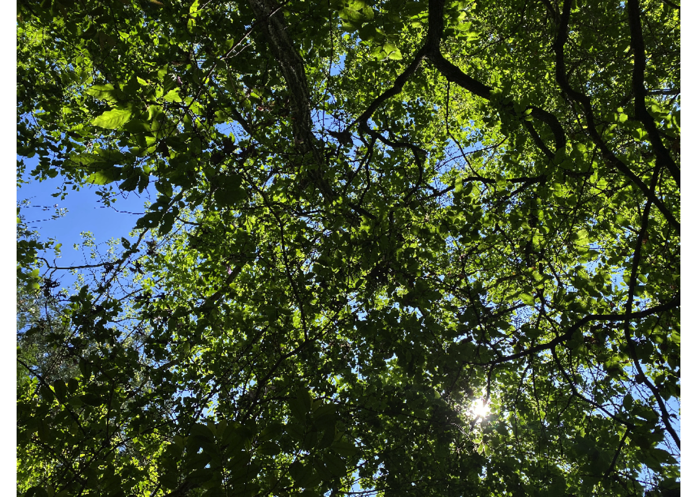
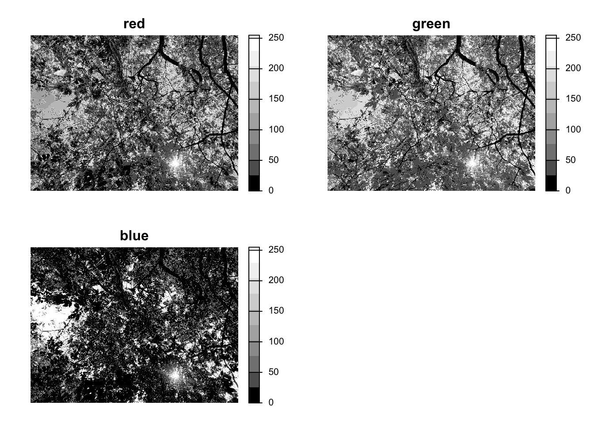
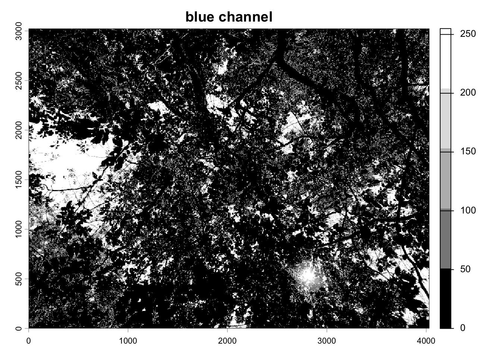
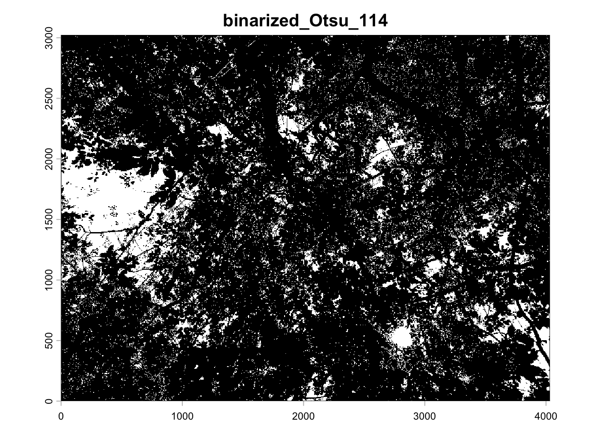
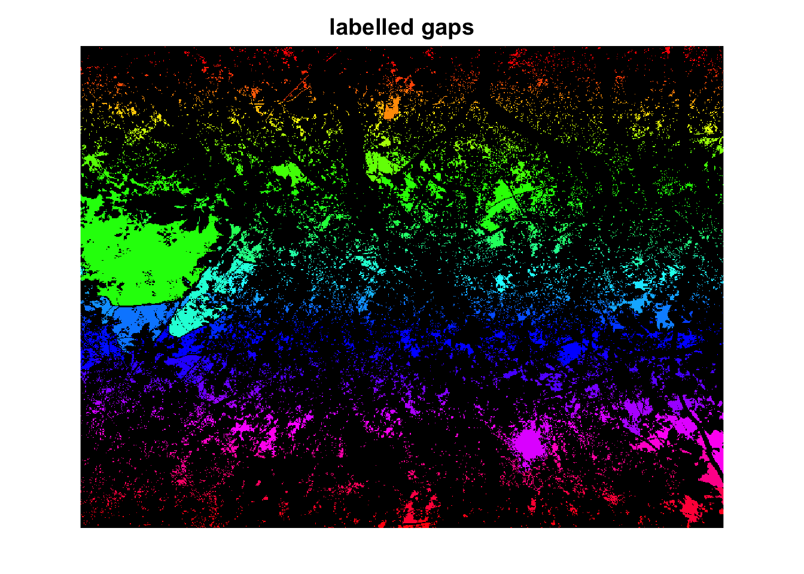
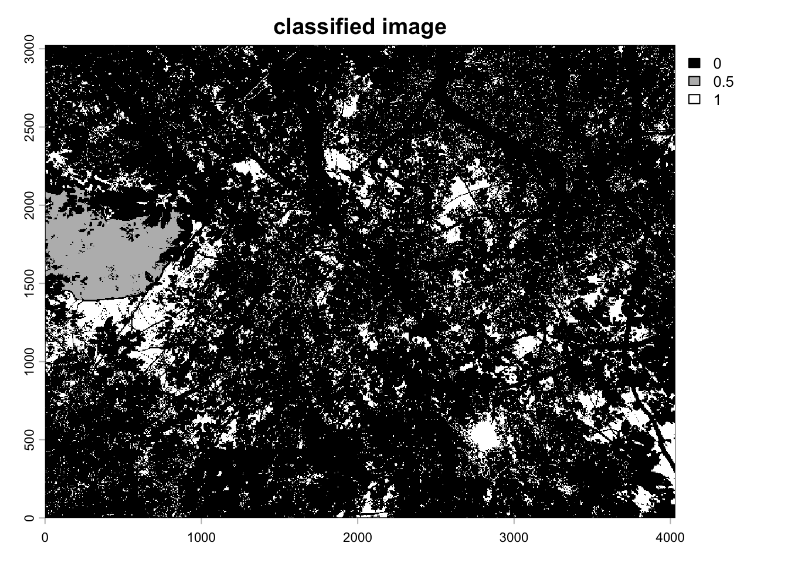

library(coveR)Digital Cover Photography（DCP）の解析
このノートの目的
このノートでは、スマートフォンや通常のカメラで撮影した林冠写真から、 「空がどれくらい見えるか」を定量化する流れを説明します。
解析には R パッケージ coveR を使用します。
coveR は Chianucci, Ferrara, and Puletti (2022) で紹介されている、 デジタルカバーフォトグラフィー解析のためのパッケージです。
Warning
Chianucci, Ferrara, and Puletti (2022) の論文本文と、現在の coveR の関数名・仕様には差があります。 そのため、論文のコードをそのまま実行すると動かない場合があります。
インストール方法について
coveR は CRAN 未登録のため、通常は GitLab からインストールします。
CRAN 版を使いたい場合は、関連パッケージの coveR2 も選択肢です。
解析の全体像（先に流れを把握）
- 画像を読み込む
- 空と林冠を二値化する
- 空隙（ギャップ）をラベリングする
- ギャップサイズで分類する
- 開空度（Gap Fraction）などの指標を計算する
パッケージのインストールと読み込み
# renvを使用している場合
renv::install("git::https://github.com/cmartin/EXIFr.git")
renv::install("gitlab::fchianucci/coveR")
# renvを使用していない場合
# install.packages("devtools")
devtools::install_gitlab("fchianucci/coveR")画像の読み込み
image_path <- "data/dcp_example_21rinpan2.jpg"
terra::plotRGB(terra::rast(image_path))Warning: [rast] unknown extent
RGB チャンネルの確認
空と林冠の分離にどのチャンネルが有効かを確認します。
terra::plot(
terra::rast(list(
terra::rast(image_path, lyrs = 1),
terra::rast(image_path, lyrs = 2),
terra::rast(image_path, lyrs = 3)
)),
main = c("red", "green", "blue"),
col = gray.colors(10, start = 0, end = 1),
axes = FALSE
)Warning: [rast] unknown extent
Warning: [rast] unknown extent
Warning: [rast] unknown extent
青チャンネルでコントラストが高い場合が多いため、coveR でも青を活用します。
terra::plot(
terra::rast(image_path, lyrs = 3),
col = gray.colors(5, start = 0, end = 1),
main = "blue channel"
)Warning: [rast] unknown extent
coveR() による基本解析
res <- coveR(image_path, thdmethod = "Otsu", display = TRUE)
print(res)# A tibble: 1 × 24
path_id id date day month year FC CC CP Le
<chr> <chr> <dttm> <int> <dbl> <dbl> <dbl> <dbl> <dbl> <dbl>
1 data dcp_exa… 2024-05-14 10:26:17 14 5 2024 0.844 0.971 0.131 3.72
# ℹ 14 more variables: L <dbl>, CI <dbl>, k <dbl>, imgchannel <dbl>,
# gap_method <chr>, gap_thd <dbl>, img_method <chr>, img_thd <dbl>,
# blurriness <dbl>, BSI <dbl>, FileSize <dbl>, ImageSize <chr>, Camera <chr>,
# Model <chr>ギャップのラベリングとサイズ分類
img <- terra::rast(image_path, lyrs = 3)Warning: [rast] unknown extentmyimg.rst <- terra::classify(img, rbind(c(-Inf, 105, 0), c(105, Inf, 1)))
vals <- matrix(
terra::values(myimg.rst, format = "matrix"),
nrow = nrow(myimg.rst),
byrow = TRUE
)
y <- mgc::ConnCompLabel(vals)
yr <- terra::rast(nrows = nrow(myimg.rst), ncols = ncol(myimg.rst), vals = y)
ext <- terra::ext(myimg.rst)
terra::set.ext(yr, ext)
terra::set.names(yr, base::names(myimg.rst))
terra::plot(
yr,
col = c("black", rainbow(1000, start = 0, end = 1)),
main = "labelled gaps",
axes = FALSE,
legend = FALSE,
asp = 1
)
ギャップサイズに基づいた分類
tbr <- data.frame(table(terra::values(yr)))
tbf <- tbr
tbf$id <- names(yr)
tbf$NR <- sum(tbf$Freq)
tbf$gL <- "Small_gap"
tbf$gL[as.character(tbf$Var1) == "0"] <- "Canopy"
tbf$gL[
as.character(tbf$Var1) != "0" & tbf$Freq >= tbf$NR * 1.3 / 100
] <- "Large_gap"
head(tbf) Var1 Freq id NR gL
1 0 10171956 dcp_example_21rinpan2_3 12192768 Canopy
2 1 3 dcp_example_21rinpan2_3 12192768 Small_gap
3 2 1 dcp_example_21rinpan2_3 12192768 Small_gap
4 3 12 dcp_example_21rinpan2_3 12192768 Small_gap
5 4 5 dcp_example_21rinpan2_3 12192768 Small_gap
6 5 3 dcp_example_21rinpan2_3 12192768 Small_gap分類に基づいた林冠情報の取得
out.cnp <- coveR(image_path, k = 0.5, display = FALSE)
head(out.cnp)# A tibble: 1 × 24
path_id id date day month year FC CC CP Le
<chr> <chr> <dttm> <int> <dbl> <dbl> <dbl> <dbl> <dbl> <dbl>
1 data dcp_exa… 2024-05-14 10:26:17 14 5 2024 0.844 0.971 0.131 3.72
# ℹ 14 more variables: L <dbl>, CI <dbl>, k <dbl>, imgchannel <dbl>,
# gap_method <chr>, gap_thd <dbl>, img_method <chr>, img_thd <dbl>,
# blurriness <dbl>, BSI <dbl>, FileSize <dbl>, ImageSize <chr>, Camera <chr>,
# Model <chr>tbf.new <- as.data.frame(tbf)
rec <- c("Large_gap" = 0.5, "Small_gap" = 1, "Canopy" = 0)
tbf.new$col <- unname(rec[tbf.new$gL])
tbf.new <- tbf.new[, c("Var1", "col")]
tbf.new$Var1 <- as.integer(as.character(tbf.new$Var1))
canopy.rst <- terra::classify(yr, as.matrix(tbf.new))
terra::set.crs(canopy.rst, terra::crs(img))
terra::set.names(canopy.rst, base::names(yr))
terra::set.ext(canopy.rst, ext)
terra::plot(
canopy.rst,
col = gray.colors(3, start = 0, end = 1),
main = "classified image"
)
開空度（Gap Fraction）の計算
coveR() の出力に含まれる FC（Canopy Fraction）から、 開空度 GF（Gap Fraction）を次式で計算できます。
\[ GF = 1 - FC = 1 - \frac{G}{NR} \]
- \(G\): ギャップ（空）ピクセル数
- \(NR\): 全ピクセル数
df <- as.data.frame(out.cnp)
df$GF <- 1 - df$FC
head(df) path_id id date day month year
1 data dcp_example_21rinpan2.jpg 2024-05-14 10:26:17 14 5 2024
FC CC CP Le L CI k imgchannel
1 0.8442385 0.9710594 0.1306006 3.718858 3.9534 0.9406735 0.5 3
gap_method gap_thd img_method img_thd blurriness BSI FileSize ImageSize
1 macfarlane 0.013 Otsu 114 0.0472 0.421 7047754 4032_3024
Camera Model GF
1 Apple iPhone 11 0.1557615References
Chianucci, Francesco, Carlotta Ferrara, and Nicola Puletti. 2022. “coveR: An R Package for Processing Digital Cover Photography Images to Retrieve Forest Canopy Attributes.” Trees 36 (6): 1933–42. https://doi.org/10.1007/s00468-022-02338-5.